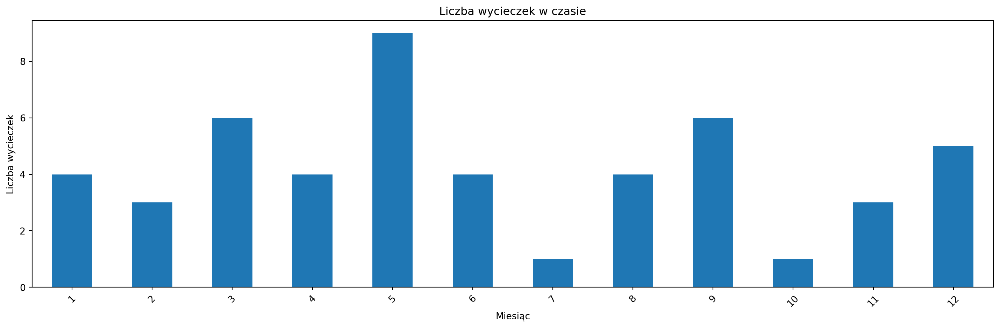
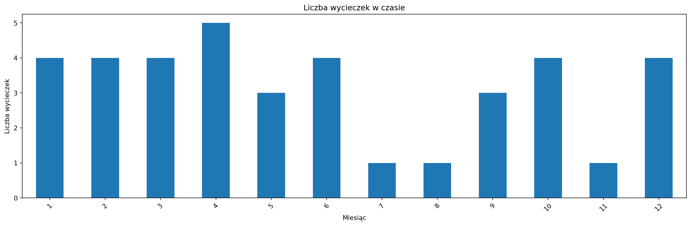
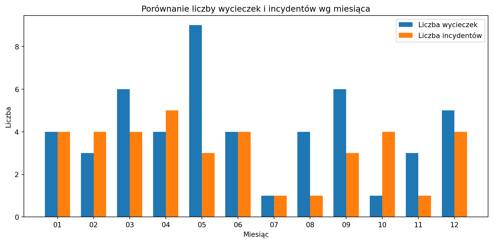
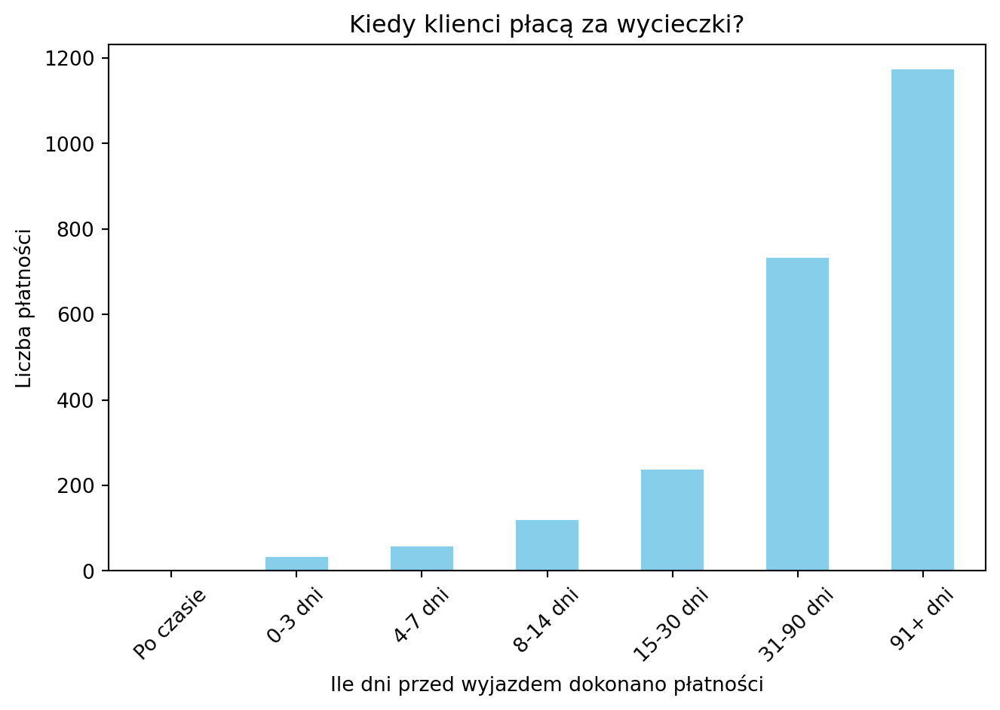

Po których wycieczkach klienci wracają na kolejne, a po których mają dość i więcej ich nie widzicie. Czy są takie, które być może powinny zniknąć z oferty?
Najpierw zajmiemy się tymi wyprawami, które odstraszają naszych klientów. Wyszukamy na początke dwie rzeczy: wszystkie rodzaje wycieczek, które miały pojedyńczych klientów, a następnie wyszukamy zbiór wycieczek, które były ostatnimi dla klientów.
Mają te infomacje stworzymy zestawienie aspektów, które mogły przyczynić się do negatywnego odbioru przez klientów (najgorsza planeta, typ wyprawy, najmniej przyjemny pojazd itp.)
Zebranie tych tripów, które są miały najwięcej jednorazowych klientów.
Rozwiń kod
def df_summary(df):# dataframe składa się z trzech interesujących nas aspektów, planeta, rodzaj i pojazd summary_planeta = df['Planeta'].value_counts().reset_index() summary_planeta.columns = ['Planeta', 'liczba'] summary_typ = df['Rodzaj'].value_counts().reset_index() summary_typ.columns = ['Rodzaj', 'liczba'] summary_pojazd = df['Spacecraft'].value_counts().reset_index() summary_pojazd.columns = ['Spacecraft', 'liczba']if summary_planeta["liczba"][0] ==1:print("Wszystkie planety występują równie często")else:print("Najczęściej występująca planeta:", summary_planeta["Planeta"][0] )if summary_typ["liczba"][0] ==1:print("Wszystkie wycieczki występują równie często")else:print("Najczęściej występująca wycieczka:", summary_typ["Rodzaj"][0] )if summary_pojazd["liczba"][0] ==1:print("Wszystkie pojazdy występują równie często")else:print("Najczęściej występujący pojazd:", summary_pojazd["Spacecraft"][0] )
Rozwiń kod
def df_summary_markdown(df): summary_planeta = df['Planeta'].value_counts().reset_index() summary_planeta.columns = ['Planeta', 'liczba'] summary_typ = df['Rodzaj'].value_counts().reset_index() summary_typ.columns = ['Rodzaj', 'liczba'] summary_pojazd = df['Spacecraft'].value_counts().reset_index() summary_pojazd.columns = ['Spacecraft', 'liczba'] markdown ="Podsumowanie \n"# 🌍 Planetyif summary_planeta["liczba"][0] ==1: markdown +="<p>🔸 Wszystkie planety występują równie często.</p>\n"else: markdown += (f"<p>🌍 Najczęściej występująca planeta to <b>{summary_planeta['Planeta'][0]}</b> "f"z liczbą <b>{summary_planeta['liczba'][0]}</b> wypraw.</p>\n" )# 🧭 Typ wyprawyif summary_typ["liczba"][0] ==1: markdown +="<p>🔸 Wszystkie rodzaje wycieczek występują równie często.</p>\n"else: markdown += (f"<p>🧭 Najczęstszy rodzaj wycieczki to <b>{summary_typ['Rodzaj'][0]}</b> "f"({summary_typ['liczba'][0]} razy).</p>\n" )# 🚀 Pojazdyif summary_pojazd["liczba"][0] ==1: markdown +="<p>🔸 Wszystkie pojazdy kosmiczne występują równie często.</p>\n"else: markdown += (f"<p>🚀 Najczęściej używany pojazd kosmiczny to <b>{summary_pojazd['Spacecraft'][0]}</b> "f"(użyty {summary_pojazd['liczba'][0]} razy).</p>\n" ) display(Markdown(markdown))
Najpierw jednorazowe tripy
Rozwiń kod
query_one_timers ="""SELECT client_id, COUNT(trip_id) as trips FROM trip_participants GROUP BY client_id HAVING trips = 1"""cursor.execute(query_one_timers)one_time_clients = np.array(cursor.fetchall())one_time_ids = one_time_clients[:,0]client_ids =list(map(int, one_time_ids.tolist()))placeholders =','.join(['%s'] *len(client_ids))query_one_time_trips =f""" SELECT trip_id, COUNT(*) as count FROM trip_participants WHERE client_id IN ({placeholders}) GROUP BY trip_id ORDER BY count DESC"""cursor.execute(query_one_time_trips, client_ids)results = np.array(cursor.fetchall())one_time_trips = results[:,0]trip_ids = [int(t) for t in one_time_trips] placeholders =','.join(['%s'] *len(trip_ids))query_trip_info =f""" SELECT d.name AS destination, tt.name AS trip_type, s.name AS spacecraft_name, r.name AS rocket_name, t.trip_id FROM trip_participants tp JOIN trips t ON tp.trip_id = t.trip_id JOIN spacecraft s ON t.spacecraft_id = s.spacecraft_id JOIN rockets r ON t.rocket_id = r.rocket_id JOIN destinations d ON t.destination_id = d.destination_id JOIN trip_types tt ON t.trip_type_id = tt.trip_type_id WHERE tp.trip_id IN ({placeholders}) GROUP BY t.trip_id, d.name, tt.name"""cursor.execute(query_trip_info, trip_ids)results = cursor.fetchall()df_disliked_trips = pd.DataFrame(results, columns=["Planeta", "Rodzaj", "Spacecraft", "Rocket","Id"])df_disliked_trips.index = pd.RangeIndex(start=1, stop=len(df_disliked_trips)+1)# print(df_disliked_trips.to_string())display(df_disliked_trips.style)df_summary_markdown(df_disliked_trips)
Planeta
Rodzaj
Spacecraft
Rocket
Id
1
Mars
Obserwacja Pierścieni
Pulsar-Infinity
Strato-V
2
2
Jowisz
Eksplorator Magnetosfery
Titan-X
Falcon-Eon
8
3
Mars
Manewr Grawitacyjny
Eclipse-Core
Zephyr-Zero
16
4
Merkury
Zejście Atmosferyczne
Astra-Infinity
Zephyr-Edge
19
5
Mars
Obóz Badawczy w Kosmosie
Nova-VX
Delta-IX
25
6
Saturn
Przelot przez Pasy Radiacyjne
Vortex-7
Atlas-Ultra
32
7
Mars
Manewr Grawitacyjny
Nova-NX
Cyclone-1000
39
8
Wenus
Zejście Atmosferyczne
Pulsar-Ultra
Cyclone-Pro
40
9
Saturn
Obóz Badawczy w Kosmosie
Nova-One
Cyclone-Ultra
50
Podsumowanie
🌍 Najczęściej występująca planeta to Mars z liczbą 4 wypraw.
🧭 Najczęstszy rodzaj wycieczki to Manewr Grawitacyjny (2 razy).
🔸 Wszystkie pojazdy kosmiczne występują równie często.
Ostatnie loty
Rozwiń kod
placeholders =','.join(['%s'] *len(one_time_ids))one_time_ids = [int(t) for t in one_time_ids] query_last_trips =f"""SELECT tp.client_id, t.trip_idFROM trip_participants tpJOIN trips t ON tp.trip_id = t.trip_idWHERE tp.client_id NOT IN ({placeholders}) AND t.departure_datetime = ( SELECT MAX(t2.departure_datetime) FROM trip_participants tp2 JOIN trips t2 ON tp2.trip_id = t2.trip_id WHERE tp2.client_id = tp.client_id )ORDER BY tp.client_id;"""cursor.execute(query_last_trips, one_time_ids)results = np.array(cursor.fetchall())df = pd.DataFrame(results, columns=['client_id', 'trip_id'])summary = df['trip_id'].value_counts().reset_index()summary.columns = ['trip_id', 'num_clients']summary = summary.sort_values(by='num_clients', ascending=False)last_trips_ids = summary["trip_id"]last_trips_ids = [int(t) for t in last_trips_ids] placeholders =','.join(['%s'] *len(last_trips_ids))query_trip_info =f""" SELECT d.name AS destination, tt.name AS trip_type, s.name AS spacecraft_name, r.name AS rocket_name, t.trip_id FROM trip_participants tp JOIN trips t ON tp.trip_id = t.trip_id JOIN spacecraft s ON t.spacecraft_id = s.spacecraft_id JOIN rockets r ON t.rocket_id = r.rocket_id JOIN destinations d ON t.destination_id = d.destination_id JOIN trip_types tt ON t.trip_type_id = tt.trip_type_id WHERE tp.trip_id IN ({placeholders}) GROUP BY t.trip_id, d.name, tt.name"""cursor.execute(query_trip_info, last_trips_ids)results = cursor.fetchall()df_last_trips = pd.DataFrame(results, columns = ["Id", "Planeta", "Rodzaj", "Spacecraft", "Rakieta"])df_last_trips.index = pd.RangeIndex(start=1, stop=len(df_last_trips)+1)display(df_last_trips)df_summary_markdown(df_last_trips)
Id
Planeta
Rodzaj
Spacecraft
Rakieta
1
Merkury
Misja Orbitalna
Pulsar-X
Delta-Edge
7
2
Merkury
Ekspedycja Księżycowa
Titan-Infinity
Falcon-Edge
23
3
Jowisz
Ekspedycja Księżycowa
Hyperion-Prime
Vega-Max
27
4
Mars
Misja Orbitalna
Eclipse-X
Talon-Pro
28
5
Saturn
Przelot przez Pasy Radiacyjne
Vortex-7
Atlas-Ultra
32
Podsumowanie
🌍 Najczęściej występująca planeta to Misja Orbitalna z liczbą 2 wypraw.
🔸 Wszystkie rodzaje wycieczek występują równie często.
🔸 Wszystkie pojazdy kosmiczne występują równie często.
Fajne loty
Rozwiń kod
query=""" SELECT tp.client_id, tp.trip_id,t.departure_datetime FROM trip_participants tp JOIN trips t ON tp.trip_id = t.trip_id ORDER BY tp.client_id, t.departure_datetime;"""cursor.execute(query)results = np.array(cursor.fetchall())df = pd.DataFrame(results,columns=["client_id","trip_id","departure"])df['next_trip'] = df.groupby('client_id')['trip_id'].shift(-1)df['returned_after'] = df['next_trip'].notna()trip_retention = df[df['returned_after']].groupby('trip_id').size().reset_index(name='clients_returned')trip_retention = trip_retention.sort_values(by='clients_returned', ascending=False)top_5_ret_ids = trip_retention.head(5)["trip_id"]top_5_ret_ids = [int(t) for t in top_5_ret_ids] placeholders =','.join(['%s'] *len(top_5_ret_ids))query =f""" SELECT d.name AS destination, tt.name AS trip_type, s.name AS spacecraft_name, r.name AS rocket_name, t.trip_id FROM trip_participants tp JOIN trips t ON tp.trip_id = t.trip_id JOIN spacecraft s ON t.spacecraft_id = s.spacecraft_id JOIN rockets r ON t.rocket_id = r.rocket_id JOIN destinations d ON t.destination_id = d.destination_id JOIN trip_types tt ON t.trip_type_id = tt.trip_type_id WHERE tp.trip_id IN ({placeholders}) GROUP BY t.trip_id, d.name, tt.name"""cursor.execute(query, top_5_ret_ids)results = cursor.fetchall()df_liked_trips = pd.DataFrame(results, columns = ["Id", "Planeta", "Rodzaj", "Spacecraft", "Rakieta"])df_liked_trips.index = pd.RangeIndex(start=1, stop=len(df_liked_trips)+1)display(df_liked_trips)df_summary_markdown(df_liked_trips)
Id
Planeta
Rodzaj
Spacecraft
Rakieta
1
Merkury
Eksplorator Magnetosfery
Luna-7
Strato-V
3
2
Saturn
Zejście Atmosferyczne
Pulsar-X
Atlas-Ultra
6
3
Merkury
Obóz Badawczy w Kosmosie
Astra-Infinity
Delta-Pro
41
4
Merkury
Ekspedycja Księżycowa
Luna-7
Strato-1000
46
5
Merkury
Eksplorator Magnetosfery
Astra-Infinity
Zephyr-Pro
47
Podsumowanie
🌍 Najczęściej występująca planeta to Eksplorator Magnetosfery z liczbą 2 wypraw.
🧭 Najczęstszy rodzaj wycieczki to Luna-7 (2 razy).
🔸 Wszystkie pojazdy kosmiczne występują równie często.
Rozwiń kod
df_summary(df_liked_trips)
Najczęściej występująca planeta: Eksplorator Magnetosfery
Najczęściej występująca wycieczka: Luna-7
Wszystkie pojazdy występują równie często
4.2 Zadanie 4
4.2.1 Analiza pracowników: najbardziej lubiany i najbardziej pracowity
Wpływ pracowników na jakość podróży. Czy obecność konkretnego pracownika poprawia jakość podróży? Czy możemy wyznaczyć gwiazdę zespołu? Wyznaczenie pracowników obecnych na wycieczkach o najwyższych ocenach jest proste, ale co dalej?
Rozwiń kod
query="""SELECT DISTINCT(position) from employees"""cursor.execute(query)results = cursor.fetchall()roles=""for i inrange(len(results)): roles += results[i][0] +", "print(roles[:-2])
query="""SELECT ea.employee_id, e.first_name, e.last_name, e.position, COUNT(ea.trip_id) AS trips_assignedFROM employee_assignments eaJOIN employees e ON ea.employee_id = e.employee_idGROUP BY ea.employee_id, e.first_name, e.last_name, e.positionORDER BY trips_assigned DESC;"""cursor.execute(query)results = cursor.fetchall()# Załaduj dane z SQL do DataFramedf_acvitivy = pd.DataFrame(results, columns=["employee_id", "first_name", "last_name", "position", "trips_assigned"])# Filtrowanie po rolifiltered_df = df_acvitivy[df_acvitivy["position"].isin(roles_of_interest)]# Posortuj i pokaż najbardziej pracowitych w wybranych rolachmost_active = df_acvitivy.sort_values(by="trips_assigned", ascending=False)most_active_of_interest = filtered_df.sort_values(by="trips_assigned", ascending=False)print(most_active.head(10))print("===================================")print(most_active_of_interest.head(10))
employee_id first_name last_name position trips_assigned
0 155 Karol Rosołek Pilot statku 18
1 104 Michał Wójcikiewicz Astrogator 18
2 150 Natasza Jancewicz Astrogator 17
4 49 Józef Łepek Kontroler lotów 17
5 26 Marcel Gendera Pilot statku 17
3 139 Oliwier Kalinka Technik pokładowy 17
6 190 Kacper Dawiec Mechanik rakietowy 16
7 191 Roksana Dybiec Inżynier systemów 16
8 126 Jakub Przystupa Inspektor jakości 16
9 44 Franciszek Klebba Mechanik rakietowy 16
===================================
employee_id first_name last_name position \
0 155 Karol Rosołek Pilot statku
5 26 Marcel Gendera Pilot statku
13 125 Tymon Strójwąs Lekarz pokładowy
14 79 Olgierd Glegoła Specjalista ds. bezpieczeństwa
18 14 Roksana Boryczko Specjalista ds. bezpieczeństwa
19 16 Elżbieta Dytko Specjalista ds. bezpieczeństwa
22 144 Elżbieta Surdyk Pilot statku
24 83 Kaja Zagożdżon Lekarz pokładowy
25 31 Krystyna Sosnówka Lekarz pokładowy
28 133 Kamila Tatarczyk Pilot statku
trips_assigned
0 18
5 17
13 14
14 14
18 13
19 13
22 12
24 12
25 12
28 11
Czy można jakoś wyznaczyć korelację pomiędzy pracownikami i oceną? Może należy wziąć pracownika pod lupę i sprawdzić czy on naprawdę ma wysoką średnią ocen, czy po prostu jest obecny na wielu lotach.
Rozwiń kod
query="""SELECTe.employee_id,position,COUNT(*) AS successFROM trips tJOIN feedback f ON f.trip_id = t.trip_idJOIN employee_assignments ea ON ea.trip_id = t.trip_idJOIN employees e ON ea.employee_id = e.employee_idWHERE rating > 3GROUP BY ea.employee_idORDER BY success DESC"""cursor.execute(query)results = cursor.fetchall()df = pd.DataFrame(results, columns = ["Id", "Pozycja","Ilość pozytywnych tripów"])df
Id
Pozycja
Ilość pozytywnych tripów
0
49
Kontroler lotów
283
1
155
Pilot statku
275
2
191
Inżynier systemów
270
3
104
Astrogator
257
4
150
Astrogator
244
...
...
...
...
133
135
Kontroler lotów
12
134
74
Inspektor jakości
12
135
87
Technik pokładowy
12
136
114
Inspektor jakości
11
137
197
Kontroler lotów
11
138 rows × 3 columns
4.3 Zadanie 5
Trend i sezonowość. Czy jest ona związana z incydentami?
Rozwiń kod
query ="""SELECT trip_id, departure_datetime FROM trips;"""cursor.execute(query)results = cursor.fetchall()df = pd.DataFrame(results, columns=["trip_id","departure_datetime"])dates = [str(s) for s in df["departure_datetime"]] df["departure_datetime"] = datesdf['departure_datetime'] = df['departure_datetime'].apply(lambda x: datetime.strptime(x, '%Y-%m-%d %H:%M:%S'))df['year_month'] = df['departure_datetime'].apply(lambda x: f"{x.year}-{x.month:02d}")df['year'] = df['departure_datetime'].apply(lambda x: x.year)df['month'] = df['departure_datetime'].apply(lambda x: x.month)# trip_counts = df['year_month'].value_counts().sort_index()# trip_counts.plot(kind='bar', figsize=(15, 5))# plt.title("Liczba wycieczek w czasie")# plt.xlabel("Rok-miesiąc")# plt.ylabel("Liczba wycieczek")# plt.xticks(rotation=45)# plt.tight_layout()# plt.show()# a może po miesiącachtrip_counts = df['month'].value_counts().sort_index()trip_counts.plot(kind='bar', figsize=(15, 5))plt.title("Liczba wycieczek w czasie")plt.xlabel("Miesiąc")plt.ylabel("Liczba wycieczek")plt.xticks(rotation=45)plt.tight_layout()plt.show()

Imo miesiącie lepiej wypadają, spróbujmy zrobić to teraz dla incydentów
Rozwiń kod
query ="""SELECT incident_id, datetime_occurred FROM incidents;"""cursor.execute(query)results = cursor.fetchall()df = pd.DataFrame(results, columns=["id","datetime"])dates = [str(s) for s in df["datetime"]] df["datetime"] = datesdf['datetime'] = df['datetime'].apply(lambda x: datetime.strptime(x, '%Y-%m-%d %H:%M:%S'))df['year_month'] = df['datetime'].apply(lambda x: f"{x.year}-{x.month:02d}")df['year'] = df['datetime'].apply(lambda x: x.year)df['month'] = df['datetime'].apply(lambda x: x.month)incidents_counts = df['month'].value_counts().sort_index()incidents_counts.plot(kind='bar', figsize=(15, 5))plt.title("Liczba wycieczek w czasie")plt.xlabel("Miesiąc")plt.ylabel("Liczba wycieczek")plt.xticks(rotation=45)plt.tight_layout()plt.show()

Wyrysujmy teraz te dwie rzeczy na jednym histogramie
Rozwiń kod
all_months =list(range(1, 13))trip_counts = trip_counts.reindex(all_months, fill_value=0)incidents_counts = incidents_counts.reindex(all_months, fill_value=0)x = np.arange(len(all_months))width =0.35fig, ax = plt.subplots(figsize=(10, 5))bars1 = ax.bar(x - width/2, trip_counts.values, width, label='Liczba wycieczek')bars2 = ax.bar(x + width/2, incidents_counts.values, width, label='Liczba incydentów')ax.set_xlabel('Miesiąc')ax.set_ylabel('Liczba')ax.set_title('Porównanie liczby wycieczek i incydentów wg miesiąca')ax.set_xticks(x)ax.set_xticklabels([f"{m:02d}"for m in all_months])ax.legend()plt.tight_layout()plt.show()

Czy klienci dokonują płatności za przejazdy z wyprzedzeniem, czy czekają do ostatniej chwili?
Rozwiń kod
query="""SELECT ts.client_id, ts.trip_id, ts.transaction_date, t.departure_datetime, DATEDIFF(t.departure_datetime, ts.transaction_date) AS days_before_tripFROM transactions tsJOIN trips t ON ts.trip_id = t.trip_id;"""cursor.execute(query)results = cursor.fetchall()df = pd.DataFrame(results, columns=["client_id","trip_id","transaction_date","departure_date","diff"])bins = [-100, 0, 3, 7, 14, 30, 90, 365]labels = ['Po czasie', '0-3 dni', '4-7 dni', '8-14 dni', '15-30 dni', '31-90 dni', '91+ dni']df['payment_window'] = pd.cut(df['diff'], bins=bins, labels=labels)summary = df['payment_window'].value_counts().sort_index()summary.plot(kind='bar', color='skyblue')plt.title('Kiedy klienci płacą za wycieczki?')plt.xlabel('Ile dni przed wyjazdem dokonano płatności')plt.ylabel('Liczba płatności')plt.xticks(rotation=45)plt.tight_layout()plt.show()

Ulubione metody płatności naszych klientów. Z jakiego źródła wpływa najwięcej pieniędzy. Czy może mamy rozwinąć ten system
Rozwiń kod
query="""SELECT payment_method, COUNT(*) AS total_transactions, SUM(amount) AS total_amountFROM transactionsWHERE status = 'completed'GROUP BY payment_methodORDER BY total_amount DESC;"""cursor.execute(query)results = cursor.fetchall()df_methods = pd.DataFrame(results, columns=["payment_method","total_transactions","total_amount"])bins = [-100, 0, 3, 7, 14, 30, 90, 365]labels = ['Po czasie', '0-3 dni', '4-7 dni', '8-14 dni', '15-30 dni', '31-90 dni', '91+ dni']df['payment_window'] = pd.cut(df['diff'], bins=bins, labels=labels)plt.figure(figsize=(10,6))plt.bar(df_methods["payment_method"], df_methods["total_amount"], color='skyblue')plt.xlabel("Metoda płatności")plt.ylabel("Łączna kwota (PLN lub waluta)")plt.title("Źródła największego przychodu wg metody płatności")plt.xticks(rotation=45)plt.tight_layout()plt.show()# Drugi wykres - liczba transakcjiplt.figure(figsize=(10,6))plt.bar(df_methods["payment_method"], df_methods["total_transactions"], color='lightgreen')plt.xlabel("Metoda płatności")plt.ylabel("Liczba transakcji")plt.title("Popularność metod płatności wg liczby użyć")plt.xticks(rotation=45)plt.tight_layout()plt.show()